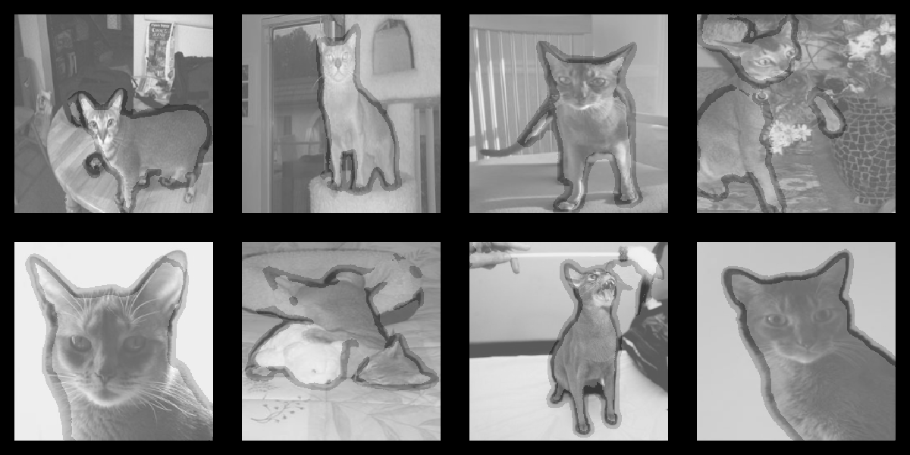

library(torch)
library(torchvision)
library(luz)
model <- model_mobilenet_v2(pretrained = TRUE)
model19 Image segmentation
19.1 Segmentation vs. classification
Both classification and segmentation are about labeling – but both don’t label the same thing. In classification, it’s complete images that are categorized; in segmentation, it’s individual pixels. For each and every pixel, we ask: Which object, or what kind of object, is this pixel part of? No longer are we just interested in saying “this is a cat”; this time, we need to know where exactly that cat is.
Note the qualifier: exactly. That’s what constitutes the difference to object detection, where the class instances found are surrounded by a so-called bounding box. The type of localization hint provided by such boxes (rectangles, basically) is not sufficient for many tasks in, say, health care, biology, or the earth sciences. For example, in segmenting cell tissue, we need to see the actual boundaries between clusters of cell types, not their straightened versions.
Object detection is not something we discuss in this book; but we’ve built up quite some experience with classification. Compared to classification, then, what changes?
Remember how, in the initial chapter on image classification, we talked about translation invariance and translation equivariance. If an operator is translation-invariant, it will return the same measurement when applied to location \(x\) and to \(x=x+n\). If, on the other hand, it is translation-equivariant, it will return a measurement adapted to the new location. In classification, the difference did not really matter. Now though, in segmentation, we want to avoid transformations that are not shift-equivariant. We can’t afford to lose location-related information anymore.
Technically, this means that no layer type should be used that abstracts over location. However, we just saw how successful the typical convolutional architecture is at learning about images. We certainly want to to re-use as much of that architecture as we can.
We will avoid pooling layers, since those destroy information about location. But how, then, are we going to build up a hierarchy of features? For that hierarchy to emerge, it would seem like some form of spatial downsizing has to occur – no matter how we make it happen. And for sure, that representational hierarchy is something we can’t sacrifice: Whatever the downstream task, the features are required for the model to develop an “understanding” of sorts about what is displayed in the image. But: If we need to label every single pixel, the network must output an image exactly equal, in resolution, to the input! These are conflicting goals – can they be combined?
19.2 U-Net, a “classic” in image segmentation
The general U-Net architecture, first described in Ronneberger, Fischer, and Brox (2015), has been used for countless tasks involving image segmentation, as a sub-module of numerous composite models as well as in various standalone forms. To explain the name “U-Net”, there is no better way than to reproduce a figure from the paper (fig. 19.1):

The left “leg” of the U shows a sequence of steps implementing a successive decrease in spatial resolution, accompanied by an increase in number of filters. The right leg illustrates the opposite mechanism: While number of filters goes down, spatial size increases right until we reach the original resolution of the input. (This is achieved via upsampling, a technique we’ll talk about below.)
In consequence, we do in fact build up a feature hierarchy, and at the same time, we are able to classify individual pixels. But the upsampling process should result in significant loss of spatial information – are we really to expect sensible results?
Well, probably not, were it not for the mechanism, also displayed in the above schematic, of channeling lower-level feature maps through the system. This is the constitutive U-Net idea: In the “down” sequence, when creating higher-level feature maps, we don’t throw away the lower-level ones; instead we keep them, to be eventually fed back into the “up” sequence. In the “up” sequence, once some small-resolution input has been upsampled, the matching-in-size features from the “down” process are appended. This means that each “up” step works on an ensemble of feature maps: ones kept while downsizing, and ones incorporating higher-level information.
The fact that U-Net-based architectures are so pervasively used speaks to the power of this idea.
19.3 U-Net – a torch implementation
Our torch implementation follows the general U-Net idea. As always in this book, kernel sizes, number of filters, as well as hyper-parameters should be seen as subject to experimentation.
The implementation is modular, emphasizing the fact that we can distinguish two phases, an encoding and a decoding phase. Unlike in many other encoder-decoder architectures, these are coupled: Since the decoder needs to incorporate “messages” from the encoder, namely, the conserved feature maps, it will have to know about their sizes.
19.3.1 Encoder
In the last chapter, we’ve seen how using a pre-trained feature extractor speeds up training. Now that we need to keep feature maps on our way “down”, can we still apply this technique? We can, and we’ll see how to do it shortly. First, let’s talk about the pre-trained model we’ll be using.
MobileNet v2 (Sandler et al. (2018)) features a convolutional architecture optimized for mobile use. We won’t go into details here, but there is one thing we’d like to check: Does it lose translation equivariance; for example, by using local pooling? Let’s poke around a bit to find out.
An `nn_module` containing 3,504,872 parameters.
── Modules ──────────────────────────────────────────────────────────────────────────────────
• features: <nn_sequential> #2,223,872 parameters
• classifier: <nn_sequential> #1,281,000 parametersImmediately, we see that model_mobilenet_v2() is a wrapping a sequence of two modules: a container called features (the feature detector, evidently), and another called classifier (again, with a telling name). It’s the former we’re interested in.
model$featuresAn `nn_module` containing 2,223,872 parameters.
── Modules ──────────────────────────────────────────────────────────────────────────────────
• 0: <conv_bn_activation> #928 parameters
• 1: <inverted_residual> #896 parameters
• 2: <inverted_residual> #5,136 parameters
• 3: <inverted_residual> #8,832 parameters
• 4: <inverted_residual> #10,000 parameters
• 5: <inverted_residual> #14,848 parameters
• 6: <inverted_residual> #14,848 parameters
• 7: <inverted_residual> #21,056 parameters
• 8: <inverted_residual> #54,272 parameters
• 9: <inverted_residual> #54,272 parameters
• 10: <inverted_residual> #54,272 parameters
• 11: <inverted_residual> #66,624 parameters
• 12: <inverted_residual> #118,272 parameters
• 13: <inverted_residual> #118,272 parameters
• 14: <inverted_residual> #155,264 parameters
• 15: <inverted_residual> #320,000 parameters
• 16: <inverted_residual> #320,000 parameters
• 17: <inverted_residual> #473,920 parameters
• 18: <conv_bn_activation> #412,160 parametersThus MobileNet is mostly made up of a bunch of “inverted residual” blocks. What do these consist of? Some further poking around tells us:
model$features[2]$`0`$convAn `nn_module` containing 896 parameters.
── Modules ──────────────────────────────────────────────────────────────────────────────────
• 0: <conv_bn_activation> #352 parameters
• 1: <nn_conv2d> #512 parameters
• 2: <nn_batch_norm2d> #32 parametersIf we want to be paranoid, we still need to check the first of these modules:
model$features[2]$`0`$conv[1]$`0`An `nn_module` containing 352 parameters.
── Modules ─────────────────────────────────────────────────────────────────────────────────────────────
• 0: <nn_conv2d> #288 parameters
• 1: <nn_batch_norm2d> #64 parameters
• 2: <nn_relu6> #0 parametersIt seems like there really is no pooling applied. The question then is, how would one obtain – and keep around – feature maps from different stages? Here is how the encoder does it:
encoder <- nn_module(
initialize = function() {
model <- model_mobilenet_v2(pretrained = TRUE)
self$stages <- nn_module_list(list(
nn_identity(),
model$features[1:2],
model$features[3:4],
model$features[5:7],
model$features[8:14],
model$features[15:18]
))
for (par in self$parameters) {
par$requires_grad_(FALSE)
}
},
forward = function(x) {
features <- list()
for (i in 1:length(self$stages)) {
x <- self$stages[[i]](x)
features[[length(features) + 1]] <- x
}
features
}
)The encoder splits up MobileNet v2’s feature extraction blocks into several stages, and applies one stage after the other. Respective results are saved in a list.
We can construct an example, and inspect the sizes of the feature maps obtained. For three-channel input of resolution 224 x 224 pixels, we see:
sample <- torch_randn(1, 3, 224, 224)
sample_features <- encoder()(sample)
purrr::map(sample_features, purrr::compose(dim, as.array))[[1]]
[1] 1 3 224 224
[[2]]
[1] 1 16 112 112
[[3]]
[1] 1 24 56 56
[[4]]
[1] 1 32 28 28
[[5]]
[1] 1 96 14 14
[[6]]
[1] 1 320 7 7Next, we look at the decoder, which is a bit more complex.
19.3.2 Decoder
The decoder is made up of configurable blocks. A block receives two input tensors: one that is the result of applying the previous decoder block, and one that holds the feature map produced in the matching encoder stage. In the forward pass, first the former is upsampled, and passed through a nonlinearity. The intermediate result is then prepended to the second argument, the channeled-through feature map. On the resultant tensor, a convolution is applied, followed by another nonlinearity.
decoder_block <- nn_module(
initialize = function(in_channels,
skip_channels,
out_channels) {
self$upsample <- nn_conv_transpose2d(
in_channels = in_channels,
out_channels = out_channels,
kernel_size = 2,
stride = 2
)
self$activation <- nn_relu()
self$conv <- nn_conv2d(
in_channels = out_channels + skip_channels,
out_channels = out_channels,
kernel_size = 3,
padding = "same"
)
},
forward = function(x, skip) {
x <- x %>%
self$upsample() %>%
self$activation()
input <- torch_cat(list(x, skip), dim = 2)
input %>%
self$conv() %>%
self$activation()
}
)We now look closer at how upsampling is achieved. Technically, what is applied is a so-called transposed convolution – hence the name of the layer, nn_conv_transpose2d().(If you’re wondering about the transpose: Quite literally, the kernel is the transpose of a corresponding one that performs downsampling.) However, it’s more intuitive to picture the operation like this: First zeroes are inserted between individual tensor values, and then, a convolution with strides greater than 1 is applied. See fig. 19.2 for a visualization.

Even though we won’t go into technical details, we can do a quick check that really, convolution and transposed convolution affect resolution in opposite ways.
We start from a 1 x 1 “image”, and apply a 3 x 3 filter with a stride of 2. Together with padding, this results in an output tensor of size 3 x 3.
img <- torch_randn(1, 1, 5, 5)
conv <- nn_conv2d(
in_channels = 1,
out_channels = 1,
kernel_size = 3,
stride = 2,
padding = 1
)
convolved <- conv(img)
convolvedtorch_tensor
(1,1,.,.) =
-0.4996 -0.2898 0.4643
0.6608 1.2109 0.8377
0.3615 0.5400 0.1567
[ CPUFloatType{1,1,3,3} ][ grad_fn = <ConvolutionBackward0> ]If we take that output, and now apply a transposed convolution, with the same kernel size, strides, and padding as the above convolution, we are back to the original resolution of 5 x 5:
transposed_conv <- nn_conv_transpose2d(
in_channels = 1,
out_channels = 1,
kernel_size = 3,
stride = 2,
padding = 1
)
upsampled <- transposed_conv(convolved)
upsampledtorch_tensor
(1,1,.,.) =
0.4076 0.0940 0.3424 0.1920 0.1078
0.2416 0.6456 0.2473 0.6500 0.2643
0.0467 0.5028 -0.1243 0.6425 -0.0083
0.2682 0.5003 0.2812 0.4150 0.2720
0.1398 0.3832 0.0843 0.4155 0.2035
[ CPUFloatType{1,1,5,5} ][ grad_fn = <ConvolutionBackward0> ]After that quick check, back to the decoder block. What is the outcome of its very first application?
Above, we saw that at the “bottom of the U”, we will have a tensor of size 7 x 7, with 320 channels. This tensor will be upsampled, and concatenated with feature maps from the previous “down” stage. At that stage, there had been 96 channels. That makes two thirds of the information needed to instantiate a decoder block (in_channels and skip_channels). The missing third, out_channels, really is up to us. Here we choose 256.
We can thus instantiate a decoder block:
first_decoder_block <- decoder_block(
in_channels = 320,
skip_channels = 96,
out_channels = 256
)To do a forward pass, the block needs to be passed two tensors: the maximally-processed features, and their immediate precursors. Let’s check that our understanding is correct:
first_decoder_block(
sample_features[[6]],
sample_features[[5]]
) %>%
dim()[1] 1 256 14 14Let me remark in passing that the purpose of exercises like this is not just to explain some concrete architecture. They’re also supposed to illustrate how with torch, instead of having to rely on some overall idea of what a piece of code will probably do, you can usually find a way to know.
Now that we’ve talked at length about the decoder blocks, we can quickly characterize their “manager” of sorts, the decoder module. It “merely” instantiates and runs through the blocks.
decoder <- nn_module(
initialize = function(
decoder_channels = c(256, 128, 64, 32, 16),
encoder_channels = c(16, 24, 32, 96, 320)) {
encoder_channels <- rev(encoder_channels)
skip_channels <- c(encoder_channels[-1], 3)
in_channels <- c(encoder_channels[1], decoder_channels)
depth <- length(encoder_channels)
self$blocks <- nn_module_list()
for (i in seq_len(depth)) {
self$blocks$append(decoder_block(
in_channels = in_channels[i],
skip_channels = skip_channels[i],
out_channels = decoder_channels[i]
))
}
},
forward = function(features) {
features <- rev(features)
x <- features[[1]]
for (i in seq_along(self$blocks)) {
x <- self$blocks[[i]](x, features[[i + 1]])
}
x
}
)19.3.3 The “U”
Before we take the last step and look at the top-level module, let’s see how the U-shape comes about in our case. Here (tbl. 19.1) is a table, displaying “image” sizes at every step of the “down” and “up” passes, as well as the actors responsible for shape manipulations:
| Encoder steps | Decoder steps | |
|---|---|---|
Input: 224 x 224 (channels: 3) |
Output: 224 x 224 (channels: 16) |
|
| \(\Downarrow\) convolve (MobileNet) | upsample \(\Uparrow\) | |
112 x 112 (channels: 16) |
append \(\Rightarrow\) | 112 x 112 (channels: 32) |
| \(\Downarrow\) convolve (MobileNet) | upsample \(\Uparrow\) | |
56 x 56 (channels: 24) |
append \(\Rightarrow\) | 56 x 56 (channels: 64) |
| \(\Downarrow\) convolve (MobileNet) | upsample \(\Uparrow\) | |
28 x 28 (channels: 32) |
append \(\Rightarrow\) | 28 x 28 (channels: 128) |
| \(\Downarrow\) convolve (MobileNet) | upsample \(\Uparrow\) | |
14 x 14 (channels: 96) |
append \(\Rightarrow\) | 14 x 14 (channels: 256) |
| \(\Downarrow\) convolve (MobileNet) | upsample \(\Uparrow\) | |
7 x 7 (channels: 320) |
use as input \(\Rightarrow\) | 7 x 7 (channels: 320) |
Did you notice that the final output has sixteen channels? In the end, we want to use the channels dimension for class scores; so really, we’ll need to have as many channels as there are different “pixel classes”. This, of course, is task-dependent, so it makes sense to have a dedicated module take care of it. The top-level module will then be a composition of the “U” part and a final, score-generating layer.
19.3.4 Top-level module
In our task, there will be three pixel classes. The score-producing submodule can then just be a final convolution, producing three channels:
model <- nn_module(
initialize = function() {
self$encoder <- encoder()
self$decoder <- decoder()
self$output <- nn_conv2d(
in_channels = 16,
out_channels = 3,
kernel_size = 3,
padding = "same"
)
},
forward = function(x) {
x %>%
self$encoder() %>%
self$decoder() %>%
self$output()
}
)Now that I’ve already mentioned that there’ll be three pixel classes to tell apart, it’s time for full disclosure: What, then, is the task we’ll use this model on?
19.4 Dogs and cats
This time, we need an image dataset that has each individual pixel tagged. One of those, the Oxford Pet Dataset, is an ensemble of cats and dogs. As provided by torchdatasets, it comes with three types of target data to choose from: the overall class (cat or dog), the individual breed (there are thirty-seven of them), and a pixel-level segmentation with three categories: foreground, boundary, and background. The default is exactly the type of target we need: the segmentation map.
library(torchvision)
library(torchdatasets)
dir <- "~/.torch-datasets"
ds <- oxford_pet_dataset(root = dir, download = TRUE)Images come in different sizes. As in the previous chapter, we want all of them to share the same resolution; one that also fulfills the requirements of MobileNet v2. The masks will need to be resized in the same way. So far, then, this looks like a case for the transform = and target_transform = arguments we encountered in the last chapter. But if we also want to apply data augmentation, things get more complex.
Imagine we make use of random flipping. An input image will be flipped – or not – according to some probability. But if the image is flipped, the mask better had be, as well! Input and target transformations are not independent, in this case.
A solution is to create a wrapper around oxford_pet_dataset() that lets us “hook into” the .getitem() method, like so:
pet_dataset <- torch::dataset(
inherit = oxford_pet_dataset,
initialize = function(...,
size,
normalize = TRUE,
augmentation = NULL) {
self$augmentation <- augmentation
input_transform <- function(x) {
x <- x %>%
transform_to_tensor() %>%
transform_resize(size)
if (normalize) {
x <- x %>%
transform_normalize(
mean = c(0.485, 0.456, 0.406),
std = c(0.229, 0.224, 0.225)
)
}
x
}
target_transform <- function(x) {
x <- torch_tensor(x, dtype = torch_long())
x <- x[newaxis, ..]
# interpolation = 0 makes sure we
# still end up with integer classes
x <- transform_resize(x, size, interpolation = 0)
x[1, ..]
}
super$initialize(
...,
transform = input_transform,
target_transform = target_transform
)
},
.getitem = function(i) {
item <- super$.getitem(i)
if (!is.null(self$augmentation)) {
self$augmentation(item)
} else {
list(x = item$x, y = item$y)
}
}
)With this wrapper, all we have to do is create a custom function that decides what augmentation to apply once per input-target pair, and manually calls the respective transformation functions.
Here, we flip every second image (on average). And if we do, we flip the mask as well.
augmentation <- function(item) {
vflip <- runif(1) > 0.5
x <- item$x
y <- item$y
if (vflip) {
x <- transform_vflip(x)
y <- transform_vflip(y)
}
list(x = x, y = y)
}Since we’re at it, let me mention types of augmentation that should be helpful with slightly different formulations of the task. Why don’t we try (small-ish) random rotations, or translations, or both?
Like this:
angle <- runif(1, -12, 12)
x <- transform_rotate(x, angle)
# same effect as interpolation = 0, above
y <- transform_rotate(y, angle, resample = 0)As-is, that piece of code does not work. This is because a rotation will introduce black pixels, or – technically speaking – zeroes in the tensor. Before, possible target classes went from 1 to 3. Now there’s an additional class, 0. As a consequence, loss computation will expect the model output to have four, not three, slots in the second dimension – and fail.
There are several possible workarounds. First, we could take the risk and assume that in nearly all cases, this will affect only background pixels. Under that assumption, we can just set all values that have turned to 0 to 2, the background class.
Another thing we can do is upsize the image, trigger the rotation, and downsize again:
angle <- runif(1, -12, 12)
x <- transform_resize(x, size = c(268, 268))
y <- transform_resize(
y,
size = c(268, 268),
interpolation = 0
)
x <- transform_rotate(x, angle)
y <- transform_rotate(y, angle, resample = 0)
x <- transform_center_crop(x, size = c(224, 224))
y <- transform_center_crop(y, size = c(224, 224))In this specific case, there still is a problem, though. In my experiments, training performance got a lot worse. This could be because we have “boundary” class. The whole râison d’être of a boundary is to be sharp; the downside of sharp boundaries is their not dealing well with resizings.
However, in the real world, segmentation requirements will vary widely. Maybe you have just two classes, foreground and background. Maybe there are many. Experimenting with rotations (and translations, that also will introduce black pixels) cannot hurt.
Back on the main track, we can now make use of the dataset wrapper, pet_dataset(), to instantiate the training and validation sets:
train_ds <- pet_dataset(root = dir,
split = "train",
size = c(224, 224),
augmentation = augmentation)
valid_ds <- pet_dataset(root = dir,
split = "valid",
size = c(224, 224))We create the data loaders, and run the learning rate finder (fig. 19.3):
train_dl <- dataloader(
train_ds,
batch_size = 32,
shuffle = TRUE
)
valid_dl <- dataloader(valid_ds, batch_size = 32)
model <- model %>%
setup(
optimizer = optim_adam,
loss = nn_cross_entropy_loss()
)
rates_and_losses <- model %>% lr_finder(train_dl)
rates_and_losses %>% plot()
From this plot, we conclude that a maximum learning rate of 0.01, at least when run with a one-cycle strategy, should work fine.
fitted <- model %>%
fit(train_dl, epochs = 20, valid_data = valid_dl,
callbacks = list(
luz_callback_early_stopping(patience = 2),
luz_callback_lr_scheduler(
lr_one_cycle,
max_lr = 0.01,
epochs = 20,
steps_per_epoch = length(train_dl),
call_on = "on_batch_end")
),
verbose = TRUE)Epoch 1/20
Train metrics: Loss: 0.6782
Valid metrics: Loss: 0.4433
Epoch 2/20
Train metrics: Loss: 0.3705
Valid metrics: Loss: 0.3331
Epoch 3/20
Train metrics: Loss: 0.315
Valid metrics: Loss: 0.2999
...
...
Epoch 11/20
Train metrics: Loss: 0.1803
Valid metrics: Loss: 0.2161
Epoch 12/20
Train metrics: Loss: 0.1751
Valid metrics: Loss: 0.2191
Epoch 13/20
Train metrics: Loss: 0.1708
Valid metrics: Loss: 0.2203
Early stopping at epoch 13 of 20This looks like decent improvement; but – as always – we want to see what the model actually says. To that end, we generate segmentation masks for the first eight observations in the validation set, and plot them overlayed on the images. (We probably don’t need to also display the ground truth, humans being rather familiar with cats and dogs.)
A convenient way to plot an image and superimpose a mask is provided by the raster package.
library(raster)Pixel intensities have to be between zero and one, which is why in the dataset wrapper, we have made it so normalization can be switched off. To plot the actual images, we just instantiate a clone of valid_ds that leaves the pixel values unchanged. (The predictions, on the other hand, will still have to be obtained from the original validation set.)
valid_ds_4plot <- pet_dataset(
root = dir,
split = "valid",
size = c(224, 224),
normalize = FALSE
)Finally, the predictions are generated, and overlaid over the images one-by-one (fig. 19.4):
indices <- 1:8
preds <- predict(
fitted,
dataloader(dataset_subset(valid_ds, indices))
)
png(
"pet_segmentation.png",
width = 1200,
height = 600,
bg = "black"
)
par(mfcol = c(2, 4), mar = rep(2, 4))
for (i in indices) {
mask <- as.array(
torch_argmax(preds[i, ..], 1)$to(device = "cpu")
)
mask <- raster::ratify(raster::raster(mask))
img <- as.array(valid_ds_4plot[i][[1]]$permute(c(2, 3, 1)))
cond <- img > 0.99999
img[cond] <- 0.99999
img <- raster::brick(img)
# plot image
raster::plotRGB(img, scale = 1, asp = 1, margins = TRUE)
# overlay mask
plot(
mask,
alpha = 0.4,
legend = FALSE,
axes = FALSE,
add = TRUE
)
}
dev.off()
This looks pretty reasonable!
Now, it’s time we let images be, and look at different application domains. In the next chapter, we explore deep learning on tabular data.